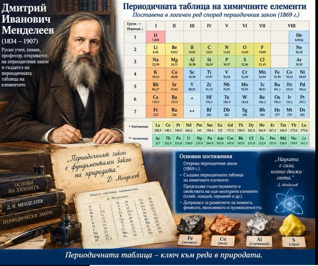
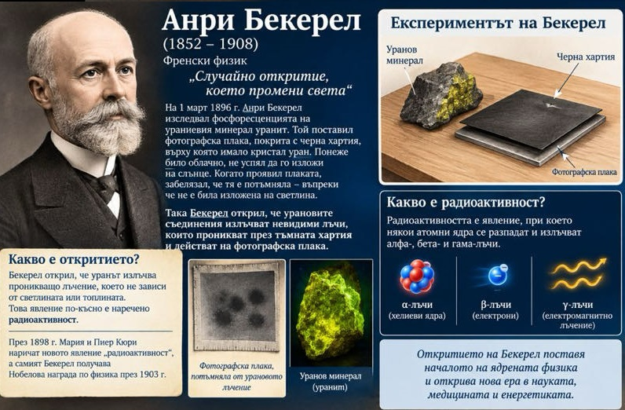
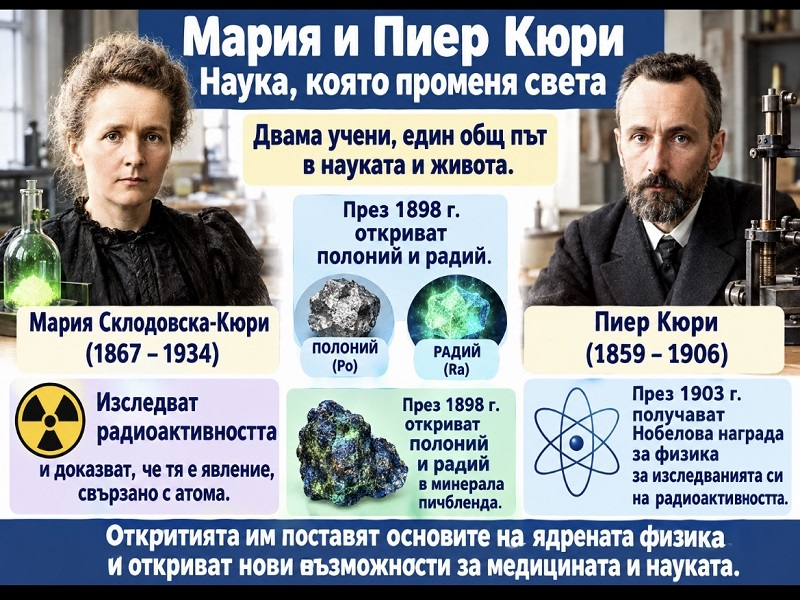
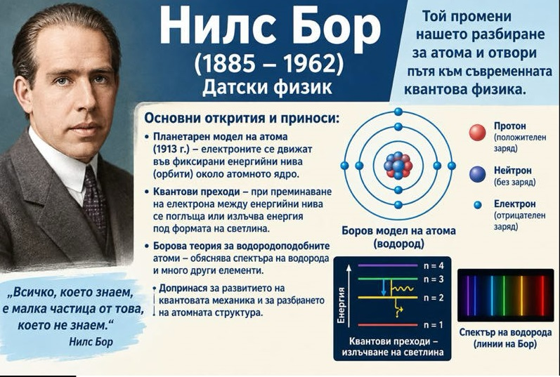
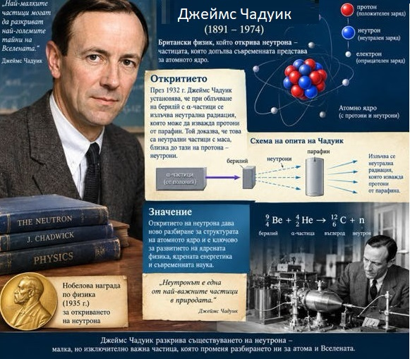
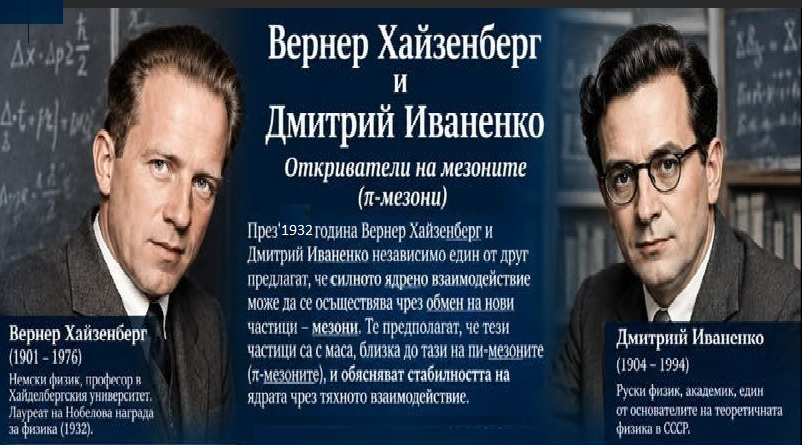

Развитие на теорията за атома
Физиката на XX век се развива въз основа на квантовата механика. Осигурила средство за проникване в микросвета, тя води до създаването на редица нови технологии като транзистора, силиконовия чип и ядрената енергия; обяснява много по-изчерпателно химичните връзки и дава ключ за ново разбиране на биологичните явления, а оттук и за разработка на актуални методи за управление на природата.
Великите учени
Създаване на периодичната система

(1834-1907)
Дмитрий Иванович Менделеев е роден в село Верхни Аремзяни, недалече от Тоболск. Той е седемнадесетото и последно дете в семейството. В 1890 напуска Петербургския университет заради конфликт с министъра на образованието. От 1892 г. става учен-пазител в Главната палата за мерки и теглилки. Неговото име носи всеизвестната периодична таблица на химичните елементи.
Откриване на радиоактивността

Антоан Анри Бекерел е френски физик, носител на Нобелова награда за физика от 1903г., откривател на естествената радиоактивност. Откритието на радиоактивността става случайно. Бекерел изучава фосфоресценцията на уранови соли и достига до извода, че урановите соли излъчват спонтанно силно лъчение.
Откриване на нови химични елементи

Мария Склодовска-Кюри е родена във Варшава (Полша). Тя и нейният съпруг Пиер Кюри пречистили няколко тона уранинит и накрая изолирали два нови химични елемента - полоний и радий. Мария и Пиер Кюри заедно с Анри Бекерел са наградени с Нобелова награда за физика през 1903 г.Мария Кюри става първата жена, носителка на престижната награда.След 8 години, през 1911 г., Мария получава Нобелова награда за химия
Създаване на планетарния модел на атома

Ърнест Ръдърфорд (1871 – 1937)
Ръдърфорд е смятан за най-големият експериментатор на XX век. Той е централна фигура, довела до познанията ни за радиоактивността и човекът, поставил началото на изучаването на ядрената физика. Ръдърфорд създава т. нар. планетарен модел на атома като прави аналогия със Слънчевата система.
Структура на атома

Нилс Бор е роден в Копенхаген. През 1913 година Бор работи с Ръдърфорд в Англия и публикува три научни статии за структурата на атома, които разкриват нови перспективи пред развитието на физиката.
Откриване на неутрона

Сър Джеймс Чадуик завършва Манчестърския и Кеймбриджкия университети. Голяма заслуга на Чадуик е откриването на неутрона при облъчване на берилиева мишена с поток от алфа-частици през 1932 г. Чадуик получава Нобелова награда за физика през 1935 г.
Модел на атомното ядро

Вернер Хайзенберг е роден през 1901 г. във Вюрцбург. За създаването на квантовата механика през 1932 г. Хайзенберг получава Нобелова награда за физика. През 1927 г., на 26 години, става професор в Университета в Лайпциг.
Дмитрий Иваненко е роден през 1904 г.Той е професор на Московския държавен университет. Работи в областта на ядрената физика, теория на гравитацията, история на физиката. Той и Хайзенберг са първите, които предполагат, че ядрото на атома се състои от протони и неутрони (1932).